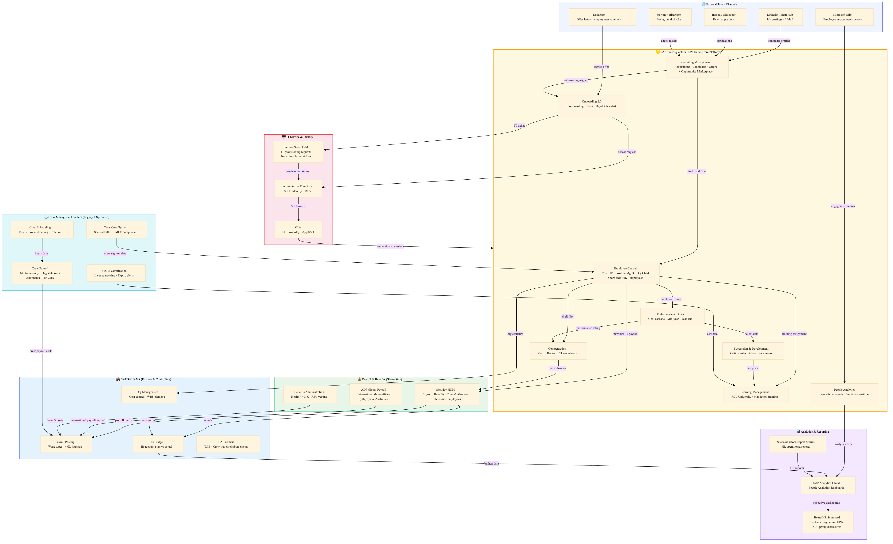

RCCL HRMS Integrated Architecture
SAP SuccessFactors HCM · Workday · SAP S/4HANA · Crew Systems — Royal Caribbean Group · Updated 2026-03-31 14:35
HRMS Enterprise Architecture Diagram

Click diagram to open fullscreen | Scroll to zoom | Drag to pan
Architecture Notes
Royal Caribbean Group's HRMS architecture centres on SAP SuccessFactors (selected 2021) as the enterprise HCM platform for shore-side talent management. SuccessFactors Employee Central provides core HR records for 30,000+ shore-side employees, while a legacy crew management system handles 70,000+ seafarers with STCW, flag-state, and MLC compliance requirements. Workday HCM manages payroll and benefits for US-based shore employees. SAP S/4HANA integrates org management, cost centre accounting, and headcount budgets. SAP Analytics Cloud provides the People Analytics layer with Perfecta Programme workforce KPIs for Board reporting.
- SAP SuccessFactors selected 2021 — displacing legacy talent management systems across all 3 brands
- Employee Central covers shore-side workforce (Miami, UK, Spain, Australia); crew in separate system
- SuccessFactors Opportunity Marketplace deployed 2024 — internal talent mobility across brands
- Glint (Microsoft) integrated for engagement surveys; data feeds into SAC People Analytics
- Director HR Systems Products role owns SuccessFactors security, environments, and all integrations
- RFP context: potential scope includes Workforce Management (WFM) module for scheduling/time